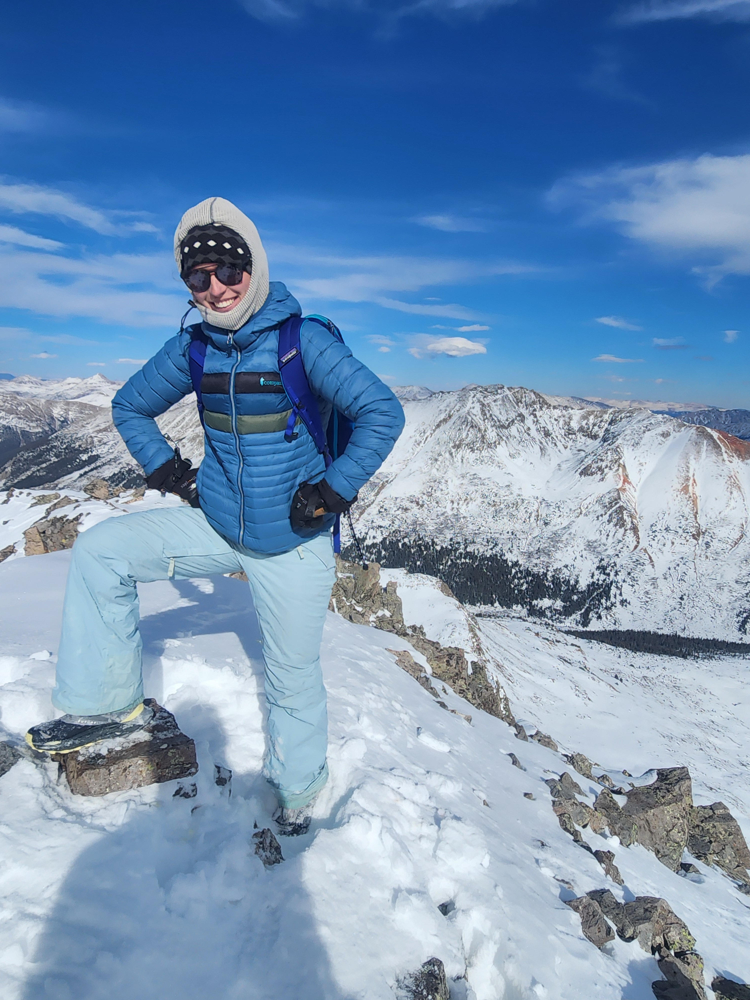
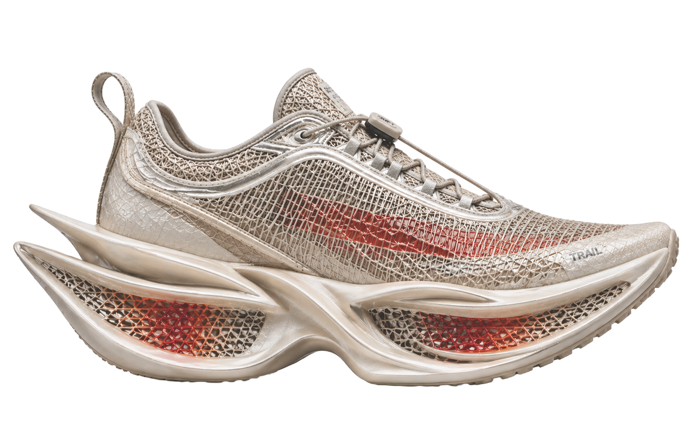
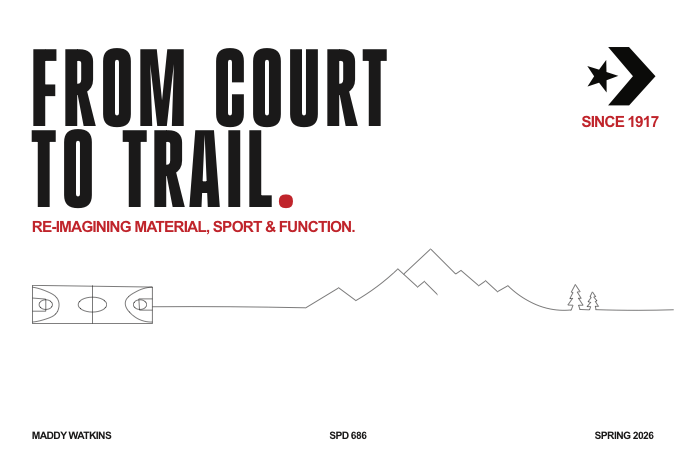

4 Pass Loop, Maroon Bells
4 Pass Loop, Maroon Bells
First Year Sport Product Design Graduate Student / University of Oregon, Portland
Inspired by movement outside.
Designing for the conditions where every detail matters.

About Me

Raised in the Pacific Northwest and shaped by the rugged landscape of Western Colorado, I am a long-distance trail runner, cyclist, skier, and mountain athlete who understands what it means to rely on gear when conditions are anything but easy.
With a background in Mathematics and Outdoor Recreation Industry Studies, I blend analytical rigor with lived outdoor experience to translate performance needs into intentional, functional design.
Work
Apparel
 Jack RABit Fastpacking Jacket System
Jack RABit Fastpacking Jacket System
 Sports Bra Running Vest
Sports Bra Running Vest
 Cooling Ultra Short
Cooling Ultra Short
 Cooling Sun Button-Up
Cooling Sun Button-Up
Footwear

Dragonfly Midsole Cushioning
Converse All Star x Trail Running [in progress]Technical Sketches
Adventures